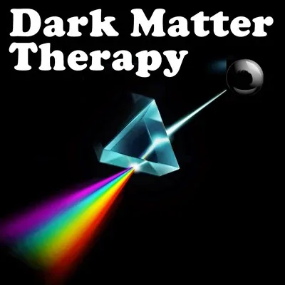
- Dark matter is everywhere. - Here is how to use it for healing. - ...a possibility approach. - WARNING NOTE:This website contains completely bizarre and nearly incomprehensible pseudo-information. It is not intended to be taken as scientific or factual. It is significantly weird stuff. On the other hand, this information is offered neither as fantasy nor as misinformation, but rather as allegory, as a model to try out in your work with energetic healing and transformational initiations. The closer your working-model approaches reality, the more effectively you can create in reality. Reading this website may not be for you. That is not a problem. We created this website because the ideas here may possibly produce useful results for someone working as a healer. Either you will need this information and you will know what to do with it, or it will seem ridiculous and you can ignore it with dignity. Please trust your intuition about this. Please pass over this website at your slightest hesitation. If these ideas are too bizarre, please let the website go lightly. There are plenty of other solid resources in StartOver.xyz with relevant and practical content.- Mostly this website's information is offered to Energy Workers and - Feelings Practitioners- This is a warning about possible non-suitability. To immediately escape from this space, click - HERE - Dark Matter, Dark Energy, and Ordinary Matter- ...latest measurements and research.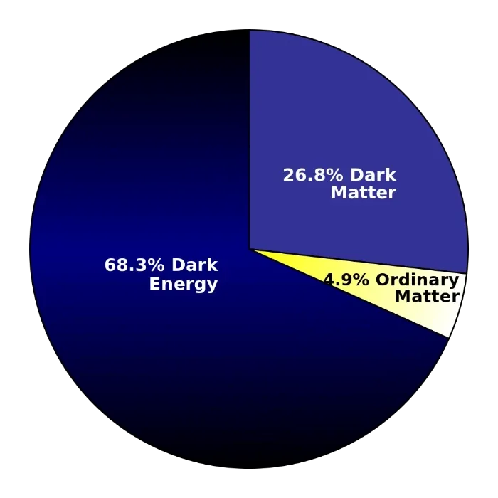
- Dark Matter and Dark Colors Theory- Dark Matter- Dark Matter theoretically accounts for - 85% of the matter in the Universe- Dark Matter is in us and around us in various concentrations without us usually perceiving it. - Dark Colors- When working with beams of light, the presence of all colors mixed together is perceived as whiteness. - When a 'point source' of white light is directed through a glass prism, the different frequencies of light refract at different angles and the various colors of light separate into a familiar rainbow pattern: red, orange, yellow, green, blue, indigo, violet. Each color of light has its own healing properties on human bodies, animals, and plants. - When working with solids, such as acrylics, poster paint powders, or colored sands in sand paintings, the presence of all colors mixed together is perceived as blackness. - The idea in Dark Matter Therapy is that Dark Matter is a mixture of all frequencies of dark matter. - If you create a healing space in which you use your Dark Matter intention to concentrate all the Dark Matter that is outside of your physical body boundary into a ball the size of an 8 Ball, the Dark Matter can function as a 'point source'. - Then if you direct the beam of Dark Matter radiation through an energetic tool called a Dark Matter Prism, the frequencies of Dark Matter will separate into all the Dark Colors: dark red, dark orange, dark yellow, dark green, dark blue, dark indigo, and dark violet. Each dark color has its own healing properties on human bodies, animals, and plants. - The remainder of this website repeats these ideas with more practical details for your experimentation. - Dark Matter Therapy- How to do it. - 0. Prepare Yourself- Before practicing Dark Matter Therapy you'll need these skills: - Being a Possibilitator
- BeingPresent
- Being Centered
- Being Grounded
- Being Bubbled (archived — not captured)
- Being Adult
- Taking back your Attention
- Being Unhookable
- Using your Clicker
- Declaring
- Holding Space
- Navigating Space
- Splitting Your Attention
- Making 'Black Holes' (learned during Expand The Box
- 0. Prepare Yourself- Before practicing Dark Matter Therapy you'll need these skills: - Being a Possibilitator
- BeingPresent
- Being Centered
- Being Grounded
- Being Bubbled (archived — not captured)
- Being Adult
- Taking back your Attention
- Being Unhookable
- Using your Clicker
- Declaring
- Holding Space
- Navigating Space
- Splitting Your Attention
- Making 'Black Holes' (learned during Expand The Box
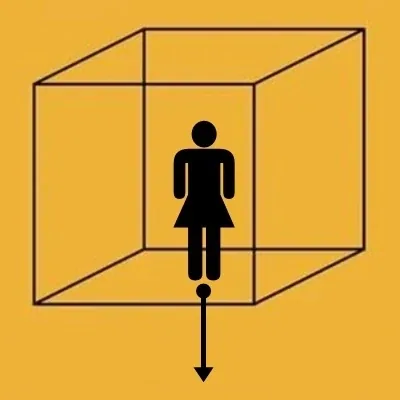
- 1. Set Up Your Energetic Work Space- Enter Possibilitator First Position - Solidly Declare - Clean out your Work Space by making and vanishing a Black Hole. - Call your Bright Principles into your Work Space.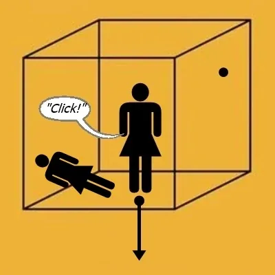
- 2. Rearrange The Dark Matter In The Space- Keep the Dark Matter that is within the boundaries of your own physical body and the boundaries of your Client's physical body where it is. - Use your Clicker to concentrate all the rest of the Dark Matter in your Work Space down to the size of an '8 ball' as used in the game of pool. Float it up behind you, or in the palm of your upraised right hand. - This ball of concentrated Dark Matter is now a 'point source of Dark Matter' that you can use as a healing resource for Dark Matter Therapy.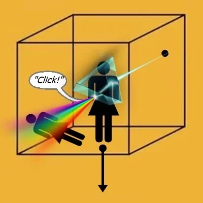
- 3. Create Your Dark Matter Prism- Use your Clicker to energetically declare into existence your Dark Matter Prism. - This is a - (It will look something like as shown in the diagram, perhaps a bit smaller with some kind of handle on it to change the direction of the beam...) The different colors of Dark Matter come out like a spray of dust that goes directly through the human body and can purify, remove contaminants, harmonize, and balance the human body by changing the Dark Matter in the human body.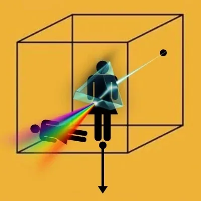
- 4. Direct A Colored Stream of Dark Matter Dust Through the Dark Matter Prism Towards Your Client- Call a stream of Dark Matter Dust from your 'point source of Dark Matter' into your Dark Matter Prism. - The Dark Matter is diffracted through your Dark Matter Prism and then behaves like a stream of colored dust particles that flow entirely through the human body. - Use your Clicker to select the proper color of Dark Matter dust to purify and heal any parts of your Client's physical body that needs healing (see below for colors and effects found so far). - Sweep the ray of colored Dark Matter dust back and forth across the afflicted areas until you sense beneficial changes. - If contaminants are removed from the human body, use your Clicker to open up a Black Hole, vanish the contaminants, and then close the Black Hole.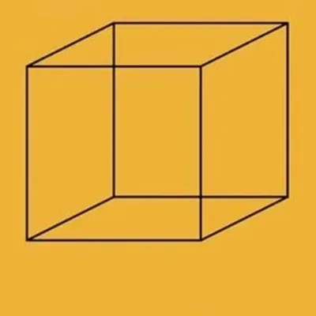
- 5. Return Your Workspace to its Original Cleaned Condition- Give your Client plenty of time to integrate the energetic changes, and encourage them to drink another glass of fresh water. After your Client leaves your Workspace, use your Clicker to: - Vanish your Dark Matter Prism. - Decompress the concentrated Dark Matter ball. - Make a Black Hole to clean your Workspace. - Vanish your energetic Workspace.- Being a
- Dark Matter Therapy Colors- ...a new area of research. Please share with us what you discover in your experiments.
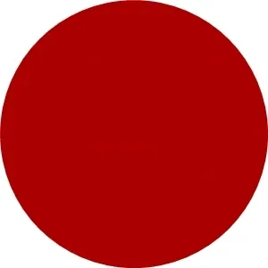
- Dark Red- Muscles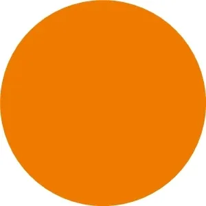
- Dark Orange- Thyroid, sexual organs, hormone balance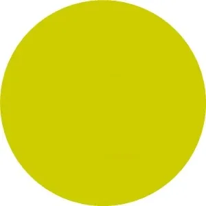
- Dark Yellow- Brain, nervous system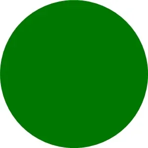
- Dark Green- Tumors, growths, cancers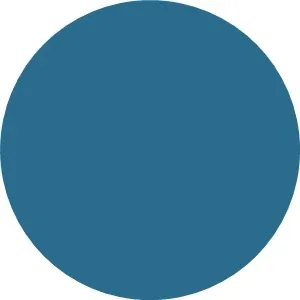
- Dark Blue- Eyes, ears, smell, taste sensations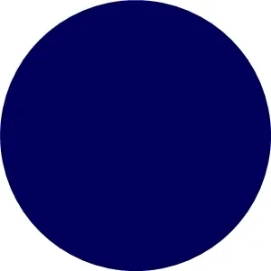
- Dark Indigo- Bones, joints, tendons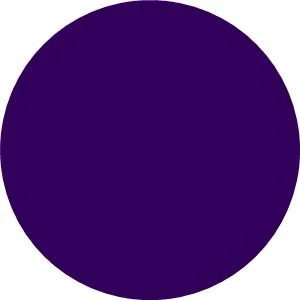
- Dark Violet- Heart, blood, circulatory system, including the liver - NOTE:This website is a- Bubble in the Bubble Mapof the massively-multiplayer online-and-offline thoughtware-upgrade personal-transformation game called- StartOver.xyz. It is a- doorwayto- experimentsthat- upgrade your thoughtwareso you can- createmore- possibility. Your knowledge is what you think- about. Your- thoughtwareis what you use to think- with. When you- change your thoughtware, you go through a- liquid stateas your mind- reorganizesitself. Liquid states can bring up transformational- feelingsand- emotions. By- upgrading your thoughtwareyou- build matrixto hold more- consciousness. No one can do this for you. No one can stop you from doing it. Our theory is that when we- collectively buildone million more Matrix Points we will change the morphogenetic field of the human race for the better. Please choose- responsiblyto read this website. Reading this whole website is worth 1 Matrix Point. Doing any of the experiments earns you additional Matrix Points. Please use Matrix Code- DARKMATT.00to log your Matrix Points earned at this website on- http://StartOver.xyz. Thank you for playing full out!